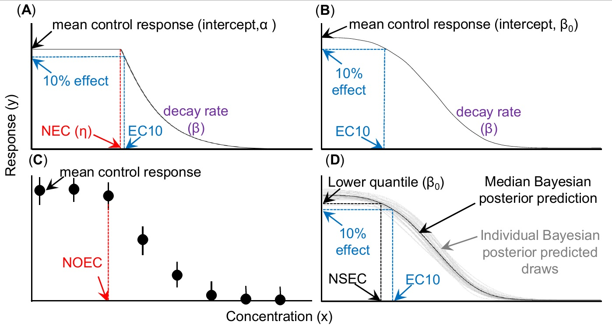
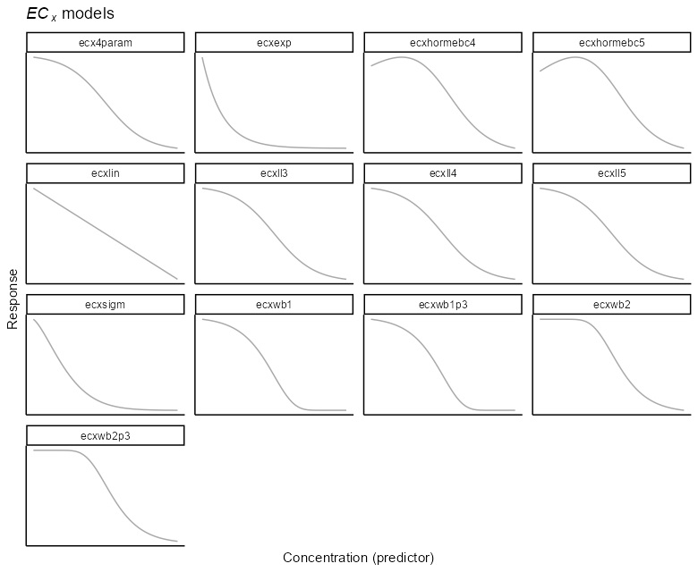
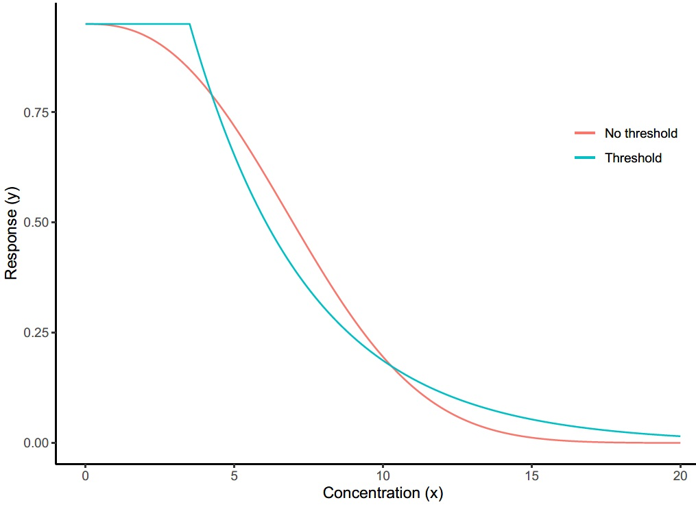
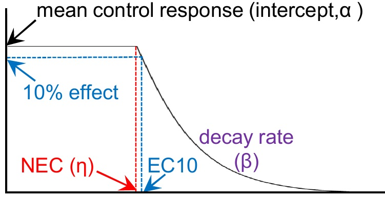
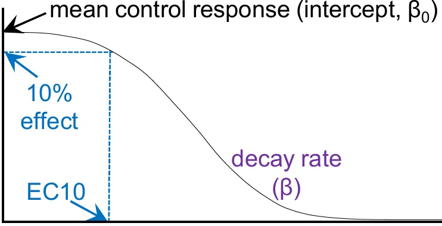
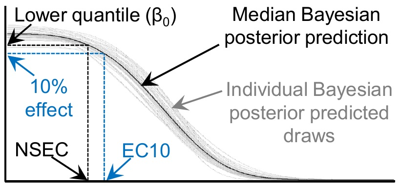
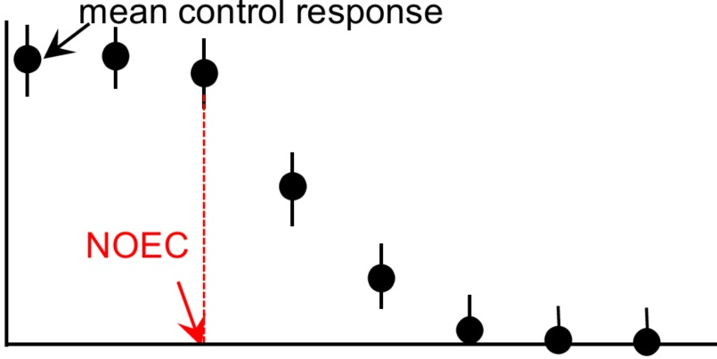
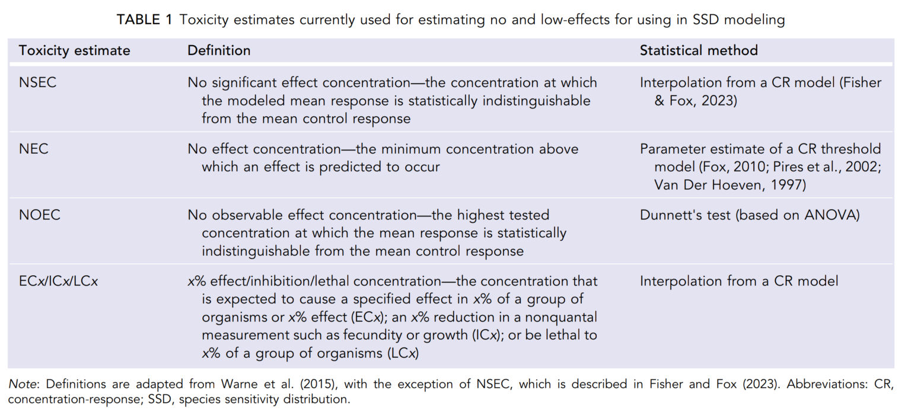

Development build. These pages are being revised and have not
been reviewed. The current course material is at
open-aims.github.io/cr_modelling_training.
Toxicity estimation and the model set
What bayesnec can fit, and which toxicity estimates can be derived from each
Background
A toxicity estimate is rarely the end of an analysis. In guideline derivation it becomes one point in a species sensitivity distribution, from which the concentration protecting a stated proportion of the community is read. For that guideline to achieve the level of protection it states, each point entering the distribution should be the highest concentration at which that species shows no effect (Fisher et al. 2023).
Module 2 fitted one model and extracted estimates from it without saying much about either choice. This module sets out the equations bayesnec can fit and which toxicity estimate each one supports. The distinction that organises everything below is between models with a threshold and models without one, and it determines what a no-effect estimate can mean.
Figure 1 sets out the four estimates and how each is obtained. It is reproduced in The estimates side by side at the end of the module, once each part of it has been covered.
The estimates in use
Four estimates are in common use, and they differ in what they measure and in what produces them.
The NEC, the no-effect concentration, is the minimum concentration above which an effect is predicted to occur. It is a parameter of a threshold model and is estimated directly (Fox 2010; Pires et al. 2002; Van Der Hoeven et al. 1997).
The ECx, the x% effect concentration, is the concentration expected to produce an effect of size x. It is obtained by interpolation from a fitted curve, and it reports an effect by construction.
The NOEC, the no-observed-effect concentration, is the highest tested concentration at which the mean response is statistically indistinguishable from the control. It comes from Dunnett’s test on a one-way analysis of variance, so its value is always one of the concentrations that happened to be tested.
The NSEC, the no-significant-effect concentration, is the concentration at which the modelled mean response becomes statistically distinguishable from the control (Fisher and Fox 2023). Like the ECx it is obtained by interpolation from a fitted curve, so it is not restricted to the tested concentrations.
The model set
The model argument of a bayesnecformula names the equation or equations to fit. The complete set is:
models()$all [1] "nec3param" "nec4param" "nechorme" "nechorme4"
[5] "necsigm" "neclin" "neclinhorme" "nechormepwr"
[9] "nechorme4pwr" "nechormepwr01" "ecxlin" "ecxexp"
[13] "ecxsigm" "ecx4param" "ecxwb1" "ecxwb2"
[17] "ecxwb1p3" "ecxwb2p3" "ecxll5" "ecxll4"
[21] "ecxll3" "ecxhormebc4" "ecxhormebc5" The names divide into two prefixes. Those beginning nec are threshold models; those beginning ecx are smooth models with no threshold.


Fitted to the same response range the two shapes cross twice, so neither is uniformly the more conservative.

Named subsets of the full set are also available, and are how a group of equations is requested rather than a single one:
names(models())[1] "nec" "ecx" "all" "bot_free" "zero_bounded"
[6] "decline" "hormesis" hormesis names the equations that allow the response to rise before it declines, which the Hormesis section below covers. Module 4 covers fitting a set and averaging across it to derive a model-averaged toxicity estimate.
Parameter definitions
The parameters have been given consistent meanings across equations wherever possible, so that a parameter named top means the same thing in every model that has it. The equations range from two parameters, in the linear and exponential decay models ecxlin and ecxexp, to five in nechorme4 and ecxll5.
| Symbol | Name | Meaning |
|---|---|---|
| \(\tau\) | top |
The y-intercept or upper plateau: the mean response at zero concentration. |
| \(\eta\) | nec |
The no-effect concentration: the value of the predictor at which the threshold in the regression is estimated to lie. |
| \(\beta\) | beta |
The exponential decay rate of the response, either from zero concentration or from \(\eta\). |
| \(\delta\) | bot |
The lower plateau: the response at infinite concentration. |
| \(\alpha\) | slope |
The linear decay rate in neclin and ecxlin, or the linear increase before \(\eta\) in the hormesis models. |
| \(\omega\) | ec50 |
Nominally the 50% effect concentration, though it is affected by scaling and should not be read strictly as an EC50. |
| \(\epsilon\) | d |
The exponent in ecxsigm and necsigm. |
| \(\zeta\) | f |
A scaling exponent used only by ecxll5. |
neclinhorme is the exception on \(\beta\), where it is a linear decay from \(\eta\), because the slope \(\alpha\) is already used for the linear increase.
Every nec model also uses a step function to define the breakpoint:
\[ f(x_i, \eta) = \begin{cases} 0, & x_i - \eta < 0 \\ 1, & x_i - \eta \geq 0 \\ \end{cases} \]
Threshold models
For models prefixed nec, the no-effect concentration is a parameter of the model itself, \(\eta\), and is estimated directly, following the approach of Fox (2010).

These models assume the response remains at a stable level, near the control mean, across the lower concentrations, until a threshold is reached. That threshold is the NEC. Beyond it the response declines with increasing concentration at some rate. The original formulation of Fox (2010) assumed exponential decline after the threshold, which is nec3param; bayesnec also provides a linear decline in neclin.
These models can also be used to estimate an ECx, though the estimate of the threshold is what they are for. They are the only way to estimate a true no-effect concentration.
An ECx taken from a threshold equation and one taken from a smooth equation fitted to the same data will usually differ, and which is larger depends on which shape suits the data. Where the response really does decline smoothly, a broken-stick curve is flat before the break and then falls sharply, so its ECx is the higher and less conservative of the two. Where a threshold is genuinely present, the smooth equation begins declining below it and returns the lower value.
Fisher et al. (2023) measured how large that difference becomes. Simulating from smooth curves of known shape and fitting a threshold equation to the result, the NEC returned represented an actual effect of 15% to 40% depending on the design. That percentage did not necessarily fall as sampling effort increased, because the problem is the shape of the equation rather than the amount of data. Choosing between the two shapes in advance therefore matters, and module 4 covers fitting both and letting the data weight them.
Smooth models
Models prefixed with ecx are continuous or smooth curves. They have an intercept, the mean control response, but no threshold: the response begins to decline at any concentration above zero, at a rate set by the equation.

They are appropriate where the data show no threshold, and are used to extract ECx values such as the EC10 or EC50, which are widely used in species sensitivity distribution modelling for deriving water quality criteria.
In the strictest sense they are not appropriate for estimating a no-effect concentration, because an ECx value, by definition, represents an effect of size x.
The no-significant-effect concentration
A smooth model has no threshold parameter, so the NEC cannot be read from it. The NSEC is a way of obtaining a no-effect estimate from such a model (Fisher and Fox 2023).

The construction starts from the fitted intercept, the mean response at the control. From the posterior of that parameter a lower bound on the control response is calculated. The NSEC is the concentration at which the fitted curve crosses that bound.
Because the calculation is done for every posterior draw, the result is a posterior distribution for the NSEC rather than a point estimate, and a credible interval follows from it directly. Module 6 covers what a posterior is and where it comes from.
The full derivation, in both frequentist and Bayesian form, is in Fisher and Fox (2023).
The effect size at the NSEC
The NSEC is the concentration at which the response becomes distinguishable from the control, and that concentration corresponds to some decline on the fitted curve. The ECNSEC is that decline, expressed as a percentage: the effect size the NSEC represents. It is the quantity that says whether an NSEC is a no-effect estimate in any practical sense, or a low-effect estimate wearing the name.
nsec() reports it as an attribute of the value it returns, and ecnsec() computes it directly:
nsec_value <- nsec(bnec_fit)
attr(nsec_value, "ecnsec_relativeP")
ecnsec(bnec_fit, nsec = nsec_value)For the nec3param fit of module 2 the NSEC of 1.54 corresponds to an ECNSEC of 1.4%, with a 95% credible interval from 0.2% to 2.4%. The effect being allowed is small, and it is not zero.
ecnsec() takes the same type argument as ecx(), described below, and measures against the same reference, so the two are on the same footing by construction. This matters for reporting: the current Australian and New Zealand method states that an NSEC whose measured effect size exceeds 20% should probably not be used to derive a guideline value (Warne et al. 2025), and the ECNSEC is how that condition is checked.
The NSEC and the NOEC
The NSEC is analogous to the NOEC: both identify the concentration at which the response becomes significantly different from the control.

The difference is that the NSEC interpolates from a fitted curve, so it is not restricted to the concentrations that happen to have been tested. This removes the most serious defect of the NOEC, whose value can only ever be one of the treatment concentrations and is therefore determined by the experimental design as much as by the toxicity.
Because it rests on a comparison against control variability, the NSEC is sensitive to poorly designed experiments. High variability in the control produces a less conservative estimate, which is the opposite of what intuition suggests, and it is the single most important thing to watch when using it.
A valid NSEC therefore depends on the control variability being a good representation of natural variability in an unimpacted population. That in turn depends on modelling the response with an appropriate statistical distribution, which module 5 covers, and on the fitted model reproducing the variability the data show, which check_fit() measures and module 4 covers.
The same exposure applies to an ECx. Mebane (2015) states the limit directly: where the control mean has a standard error of 20%, an EC10 is not a meaningful quantity, whatever the fitting routine returns.
Choosing an estimate
Where no threshold can be estimated, the available options are the NOEC, an ECx at some low value of x, or the NSEC.
The Australian and New Zealand method sets out a hierarchy, and it was revised in 2025 (Warne et al. 2025). The NEC and the NSEC are now the two most preferred estimates, both being negligible-effect concentrations estimated directly from the concentration-response relationship. An ECx at x of 10 or less, and the BEC10, are listed as other appropriate estimates. An ECx between 10 and 20, and the NOEC, are less preferred. The LOEC, the MATC and an EC50 require a conversion factor before they can be used at all.
Two things follow for practice. The NSEC no longer needs justifying as a novel method in an Australian guideline derivation. And because it sits in the preferred tier alongside the NEC, the condition attached to it applies: an NSEC with a measured effect size above 20% should probably not be used to derive a guideline value, which is what the ECNSEC above is for.
The NOEC has been discarded as a measure of toxicity and is among the least preferred methods (Warne and Van Dam 2008; Warne et al. 2018; Warne et al. 2025).
An ECx, and the EC10 in particular, is the method the earlier guidelines specify (Warne et al. 2018) and is widely used internationally. An ECx at x of 5 or 10 has been endorsed by the OECD since Van Der Hoeven et al. (1997).
Where an estimate of no effect is required, an ECx is arguably the wrong instrument, because it reports the concentration producing an effect of magnitude x. It is an effect concentration by construction.
The NSEC, like the NOEC before it (Mebane 2015), also represents some non-zero effect: for a smooth sigmoidal model any concentration above zero produces one. The difference is where the line is drawn. The NSEC is the concentration below which the response does not deviate significantly from the control, and a significant deviation can occur well before the effect reaches the 10% that an EC10 reports. Unless there is separate evidence that a 10% effect has no consequence for the population, an EC10 cannot be assumed protective.
Hormesis
Some equations in both groups allow an initial increase in the response at low concentrations before the decline begins (see Mattson 2008). These are the hormesis models, and their names contain horme. The behaviour occurs for several reasons and is seen regularly in whole-effluent toxicity testing of mixed discharges.
The threshold hormesis models are:
intersect(models()$hormesis, models()$nec)[1] "nechorme" "nechorme4" "neclinhorme" "nechormepwr"
[5] "nechorme4pwr" "nechormepwr01"These assume a linear increase up to the threshold and allow various decay functions after it. Hormesis raises no difficulty for the NEC, which remains the concentration at which the response begins to decline.

The smooth hormesis models are:
intersect(models()$hormesis, models()$ecx)[1] "ecxhormebc4" "ecxhormebc5"
These do raise a difficulty for ECx, because an effect has to be measured against something, and a hormetic curve offers two candidates: the control, and the peak of the curve. bayesnec measures every ECx, NSEC and ECNSEC from the control, the predicted mean at the lowest concentration in the data, taken separately for each posterior draw. The two references coincide for a monotonically declining curve and differ for a hormetic one, so this choice changes the reported ECx for a hormesis equation and no other.
Extracting estimates
Three functions extract toxicity estimates from a fitted model: nec(), ecx() and nsec(). Their full documentation is in the help files, which are the authoritative source; what follows covers the arguments that require a decision rather than every argument.
nec()
The NEC is a parameter of the model, so the function has little to do beyond summarising its posterior.
signature("nec")function (object, posterior = FALSE, xform = identity, prob_vals = c(0.5,
0.025, 0.975), ...) posterior returns the full posterior sample rather than a summary. xform applies a function to the returned values, which is how estimates are returned to the original scale when the predictor was transformed in the formula. prob_vals sets the quantiles summarised, by default the median and a 95% credible interval.
nec() applies only to models that have the parameter. Calling it on a smooth model is an error rather than a silent substitution.
ecx()
signature("ecx")function (object, ecx_val = 10, resolution = 200, posterior = FALSE,
type = "absolute", x_range = NA, xform = identity, prob_vals = c(0.5,
0.025, 0.975), ..., dpar = NULL) ecx_val is the effect percentage, defaulting to 10 for an EC10.
type determines what the percentage is measured against, which is the substantive decision here. "absolute", the default, measures from the control to zero. "relative" measures from the control to the equation’s theoretical asymptote, the bot parameter where the equation has one. "range" measures from the control to the lowest response the fitted curve predicts. "direct" takes a response value rather than a percentage and returns the concentration at which the curve reaches it.
resolution sets the number of predictor values over which the crossing is located, and defaults to 200. x_range allows estimates outside the observed range of the predictor, which should be used deliberately, since it extrapolates the fitted curve.
Every one of these measures from the control, which bayesnec takes to be the predicted mean at the lowest concentration in the data, evaluated separately for each posterior draw. type names what the percentage is measured towards. The control is identified by its position in the series rather than by its value, which keeps the convention intact under the usual preparation in which a small constant is added to the concentrations so that a zero control can be plotted on a logarithmic axis. An experiment whose lowest treatment is not a control is being analysed as though it were, and should say so.
Three changes arrived in bayesnec 2.2.0 and matter when returning to an older analysis. "range" computes what "relative" computed up to version 2.1.3, and passing type = "relative" explicitly now raises a warning naming "range". "relative" is refused where the equation has no bot and the family is unbounded below, because there is then no finite quantity to measure against. And the hormesis_def argument has been removed from ecx(), nsec(), ecnsec() and the comparison functions: with the control always the reference it selected nothing. A call still passing it is refused by name rather than ignored.
Targets the curve never reaches
A target the fitted curve does not reach within the range of the predictor returns NA for the affected draws, together with a warning naming how many. Earlier versions returned the grid point nearest the target, which for such a curve is the highest concentration tested, reported as an estimate with nothing said about it.
An estimate summarised over the remaining draws is a censored estimate and has to be reported as one, naming how many draws were excluded and stating that the value is bounded below by the highest concentration tested. Reported without that label it reads as an ordinary estimate and understates the true value. This is a result about the experiment: the design did not reach the effect size asked for.
nsec()
signature("nsec")function (object, sig_val = 0.01, resolution = 200, x_range = NA,
xform = identity, prob_vals = c(0.5, 0.025, 0.975), ...,
posterior = FALSE, dpar = NULL) sig_val is the quantile of the control posterior used to define a significant decline, defaulting to 0.01, that is 99% certainty of a decline relative to the control. That value generally produces sensible results. Where it does not, the better response in a guideline-derivation context is usually to reconsider whether the statistical model suits the data, rather than to adjust the significance level. Other values may be appropriate in other decision contexts.
Raising sig_val makes the estimate more conservative, because it places the reference higher on the control posterior and the curve crosses it sooner.
One consequence of the construction catches people out. The reference is the sig_val quantile of the control posterior, so that proportion of draws have a control at or below the reference and reach it at the control concentration itself. Those draws sit at the bottom of the NSEC posterior. Where sig_val exceeds the quantile at which the lower credible bound is read, which is 0.025 for a 95% interval, the lower bound of the NSEC is therefore zero, or the lowest concentration tested where that is not zero. Fisher and Fox (2023) report exactly this in their Table 3. A lower bound of zero at a high sig_val is the construction behaving as defined, and it reflects a real possibility: for a smooth curve, a decline in the response may begin at the lowest concentration applied.
The estimates side by side
Figure 1 from the start of the module sets the four estimates against one another.
Panel A is a threshold equation, where the NEC is the breakpoint parameter and the EC10 lies above it. Panel B is a smooth equation, which has no breakpoint, so the EC10 is the only estimate it supports directly. Panel C is the NOEC, obtained from the treatment means with no curve fitted, which is why it can only ever take one of the tested values. Panel D is the NSEC, the concentration at which the fitted curve crosses a lower quantile of the control posterior, with the EC10 for the same curve above it. In both panels B and D the EC10 is the larger and therefore the less conservative estimate.
Table 1 gives the published wording for each estimate, which is the form to quote in a methods section, together with the statistical method that produces it.

References
Fisher, Rebecca, and David R. Fox. 2023. “Introducing the No-Significant-Effect Concentration.” Environmental Toxicology and Chemistry n/a (n/a). https://doi.org/https://doi.org/10.1002/etc.5610.
Fisher, Rebecca, David R. Fox, Andrew P. Negri, Joost van Dam, Florita Flores, and Darren Koppel. 2023. “Methods for Estimating No-Effect Toxicity Concentrations in Ecotoxicology.” Integrated Environmental Assessment and Management, ahead of print. https://doi.org/https://doi.org/10.1002/ieam.4809.
Fox, David R. 2010. “A Bayesian approach for determining the no effect concentration and hazardous concentration in ecotoxicology.” Ecotoxicology and Environmental Safety 73 (2): 123–31.
Mattson, Mark P. 2008. “Hormesis Defined.” Ageing Research Reviews 7 (1): 1–7. https://doi.org/https://doi.org/10.1016/j.arr.2007.08.007.
Mebane, Christopher A. 2015. “In Response: Biological Arguments for Selecting Effect Sizes in Ecotoxicological Testing—a Governmental Perspective.” Journal Article. Environmental Toxicology and Chemistry 34 (11): 2440–42.
Pires, Ana M., João A. Branco, Ana Picado, and Elsa Mendonça. 2002. “Models for the estimation of a ’no effect concentration’.” Environmetrics 13: 15–27. https://doi.org/10.1002/env.501.
Van Der Hoeven, Nelly, Frank Noppert, and Annegaaike Leopold. 1997. “How to Measure No Effect. Part i: Towards a New Measure of Chronic Toxicity in Ecotoxicology. Introduction and Workshop Results.” Journal Article. Environmetrics 8 (3): 241–48. https://doi.org/https://doi.org/10.1002/(SICI)1099-095X(199705)8:3<241::AID-ENV244>3.0.CO;2-7.
Warne, M, GE Batley, RA van Dam, et al. 2018. “Revised Method for Deriving Australian and New Zealand Water Quality Guideline Values for Toxicants – Update of 2015 Version.” Journal Article. Prepared for the Revision of the Australian and New Zealand Guidelines for Fresh and Marine Water Quality. Australian and New Zealand Governments and Australian State and Territory Governments, Canberra, 48 Pp.
Warne, Michael St J., Graeme E. Batley, Rick A. van Dam, et al. 2025. Method for Deriving Australian and New Zealand Water Quality Guideline Values for Protecting Aquatic Ecosystems from Toxicants — Update of 2018 Version. Australian; New Zealand Governments; Australian state; territory governments.
Warne, Michael St J, and Rick Van Dam. 2008. “NOEC and LOEC Data Should No Longer Be Generated or Used.” Journal Article. Australasian Journal of Ecotoxicology 14 (1): 1–5.